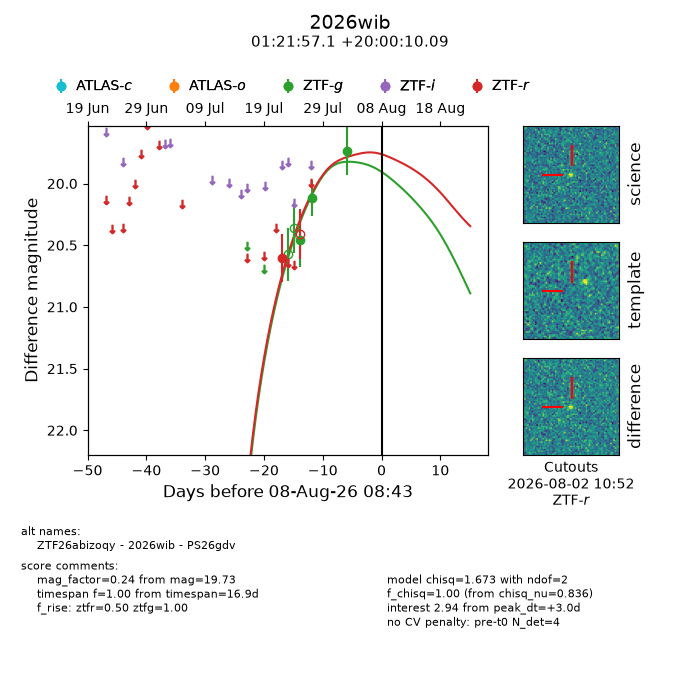
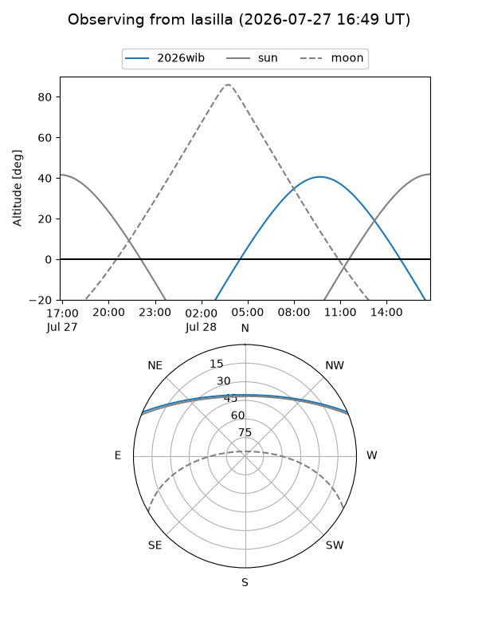
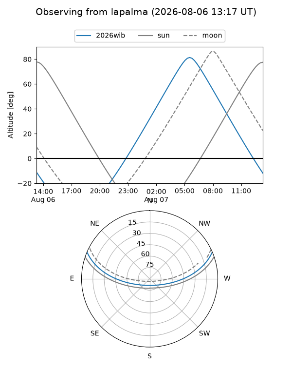
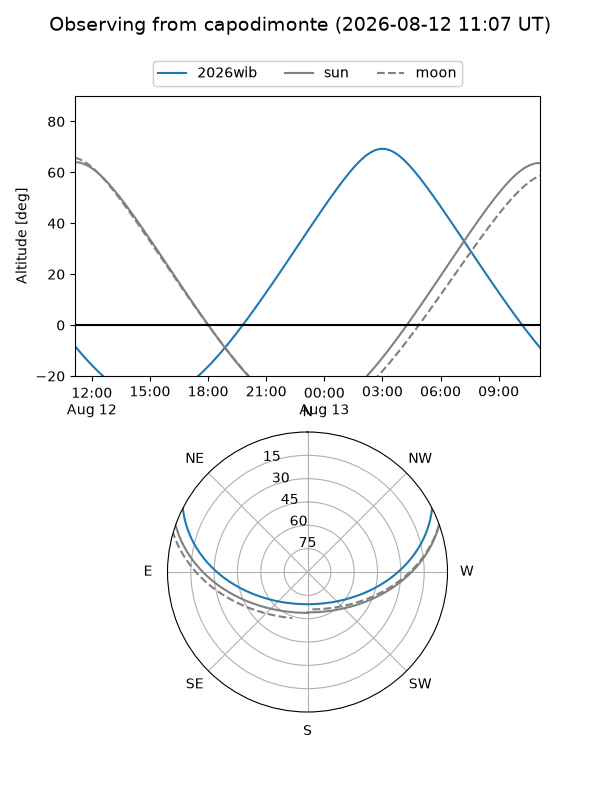

2026wib
Target 2026wib at 2026-08-08 08:47
Aliases and brokers:
FINK-ZTF: ztf.fink-portal.org/ZTF26abizoqy
Lasair-ZTF: lasair-ztf.lsst.ac.uk/objects/ZTF26abizoqy
ALeRCE-ZTF: alerce.online/object/ZTF26abizoqy
YSE-PZ: ziggy.ucolick.org/yse/transient_detail/2026wib
TNS name: wis-tns.org/object/2026wib
Direct TNS query: direct search
alt names
ZTF26abizoqy (ztf,fink_ztf)
2026wib (tns,yse)
PS26gdv (panstarrs)
Coordinates:
equatorial (ra, dec) = 20.4880,+20.00280
equatorial (HMS+DMS) = 01:21:57.12,+20:00:10.09
galactic (l, b) = (132.6404,-42.29300)
Flags:
TNS type: nan
peak dt: +3.0
Photometry:
last ztfg=19.73, ztfr=20.60
3 ztfg, 1 ztfr detections
Lightcurve

Visibility



Additional plots